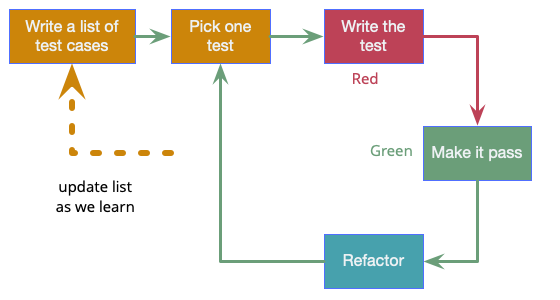

Andreas Hussain Sarantaris · 26-11-2026
Frederikssund Gymnasium · Programmering B
shortestPathBFS().s til t.shortest-path-exercise repositoriet til at lave biblioteksmodul der også indeholder Dijkstra's algoritme.if (g.identicalNodes(n,t)) {
path.push(t);
let m = prevMap.get(g.key(t));
path.push(m);
while (!g.identicalNodes(m,s)) {
m = prevMap.get(g.key(m));
path.push(m);
}
return path.reverse();
}
projekt02.md på Lectio der indeholder opgavebeskrivelsen.let array = [0, 5, 7, 10 , 14];
array.filter((e) => e > 8);String, Number, BigInt, Boolean, Symbol, Undefined, og Null. I JavaScript kaldes de også "primitive værdier" (primitive values).Object.PriorityQueue). Hvad er det? Hvordan implementerer vi den?WeightedMatrixGraph) med en vægtfunktion \(w(n,m)\) (weight function). Hvad er vægtfunktionen \(w\) givet ved?
npm install package-name: Downloader npm-pakken ved navn "package-name" til mappen node_modules, tilføjer den som dependency i filen package.json og opretter/opdaterer filen package-lock.json. npm install: Downloader alle dependencies i filen package.json til mappen node_modules og opretter/opdaterer filen package-lock.json. node_modules-mappen skal ignoreres af Git (se .gitignore-filen).npm init (jeg har allerede oprettet repositoriet som en npm pakke og opsat de fleste nødvendige filer).export og import.type="module"./**... */ bliver registreret af JSDoc. jsdoc.json-filen til at dokumentere alle klasser/funktioner der eksporteres i filen index.js i mappen src.p5.js (demo/js/p5.js) der også bruger JSDoc-notation til deres dokumentation i deres reference (p5js.org/reference/).npm install i terminalen.npm run docs. Det vil køre kommandoen jsdoc -c jsdoc.json (se package.json) som genererer/opdaterer en dokumentationshjemmeside som befinder sig i mappen docs ud fra konfigurationsfilen jsdoc.json.| Punkt * | Start + varighed | Aktivitet | Indhold |
|---|---|---|---|
| 1U | 12:05 + 15 | Overblik over forløbet og sidste lektion | Hvad har vi været igennem sidste lektion og generelt i dette forløb? |
| 1Ø | 12:20 + 10 | Lektier til i dag | Spørgsmål til lektierne og status på hvor langt I er nået. |
| 2U | 12:30 + 40 | Introduktion til Afleveringsprojekt 2 | Jeg sætter jer igang med projektet og gennemgår opgavebeskrivelsen. |
| 2Ø | 13:10 + 30 | I går igang med Afleveringsprojekt 2 | I får noget tid til at komme igang med projektet. |
| 3U | 13:50 + 20 | Test-Driven Development (TDD) | Introduktion til TDD og enhedstests og integrationstests. |
| 3Ø | 14:10 + 65 | Skriv enhedstests til datastrukturerne | Gå igang med at lave tests til jeres nye datastrukturer. |
| 4U | 15:15 + 5 | Opsamling, lektier og næste lektion | Hjemmearbejde til næste gang og emnerne for næste lektion. |
| 4Ø | 15:20 + 5 | Afrunding | Færdiggør jeres arbejde og reflektér over jeres læring. |